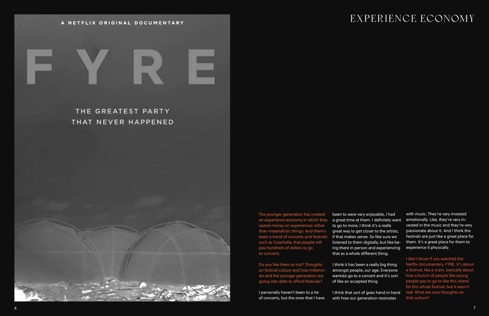
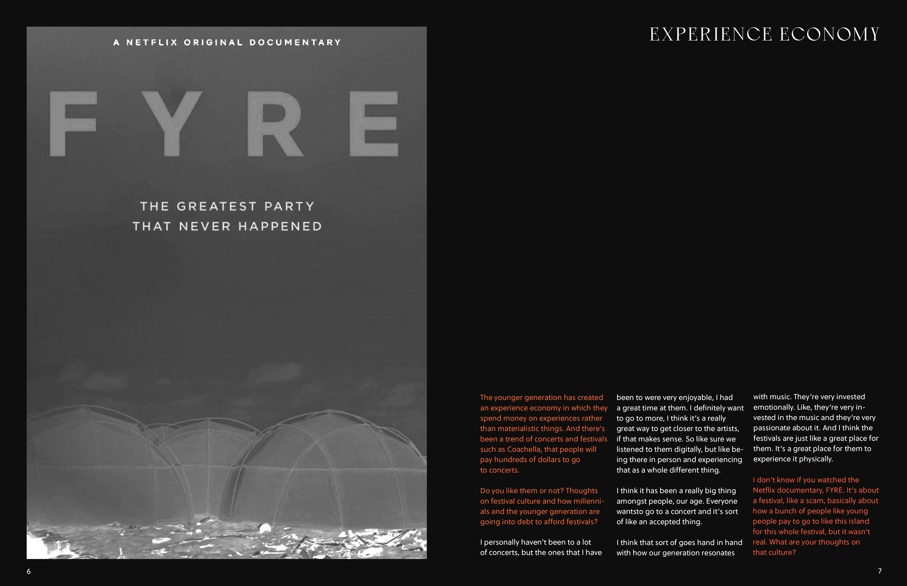
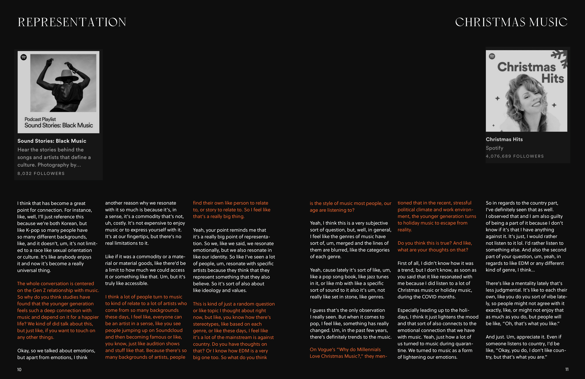
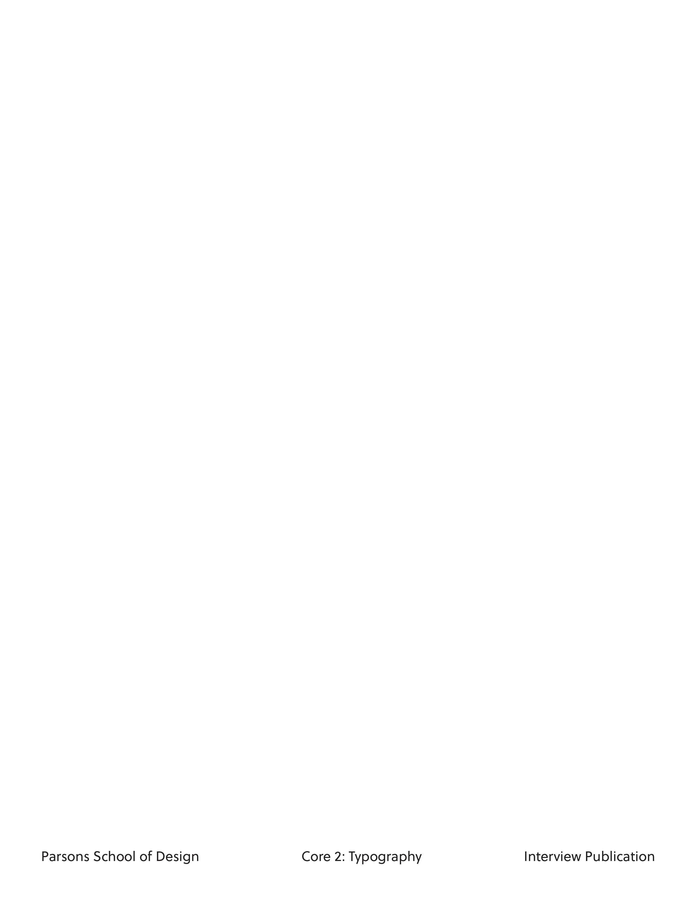
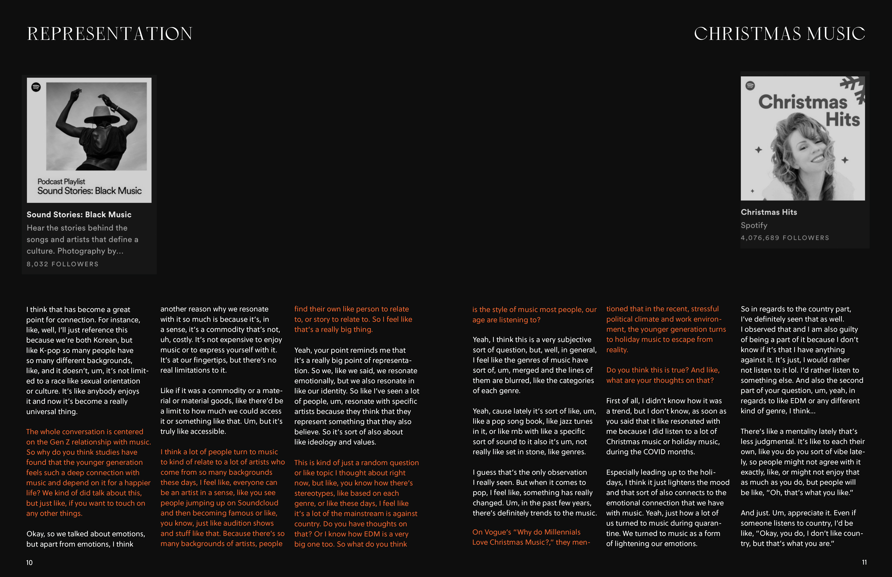
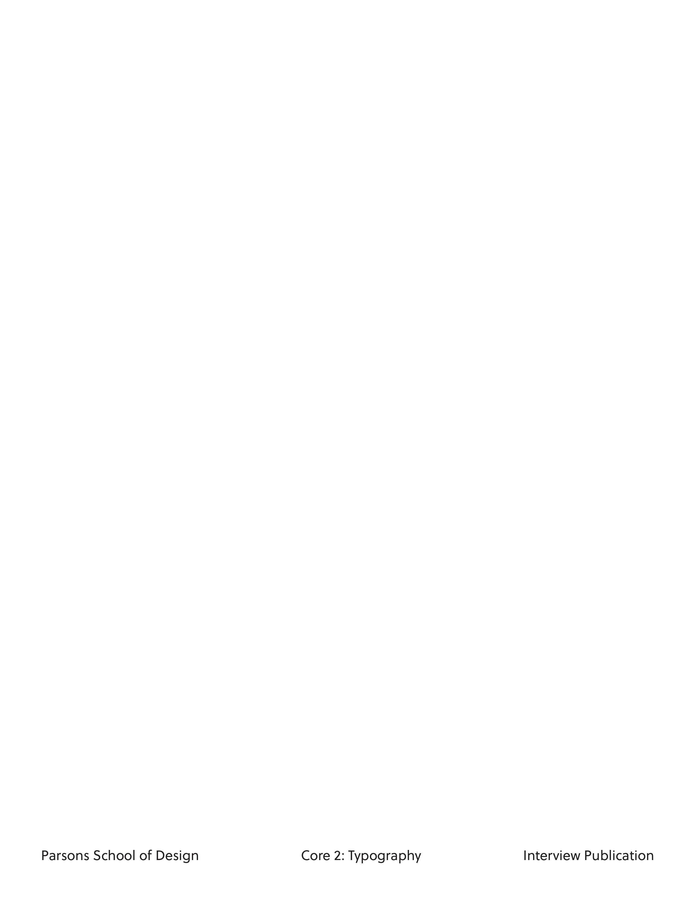

Project for Core 2: Typography, Parsons School of Design.
An interview publication with a peer about Gen Z's relationship to music. This publication features conversation on how music plays a role in mental health, especially during the pandemic, the rise of an experience economy, how music has become a universal language, and more.
 

 


